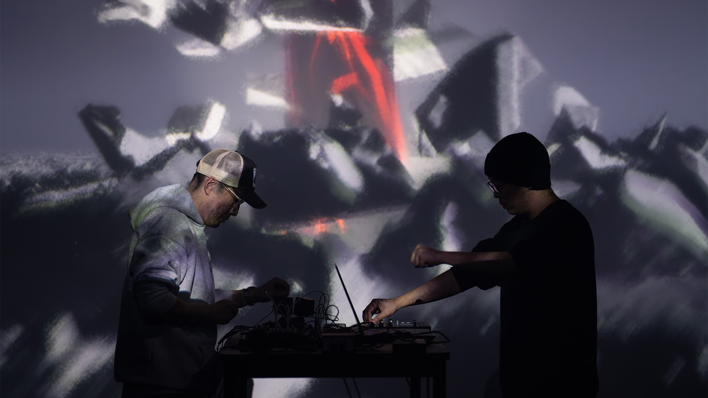
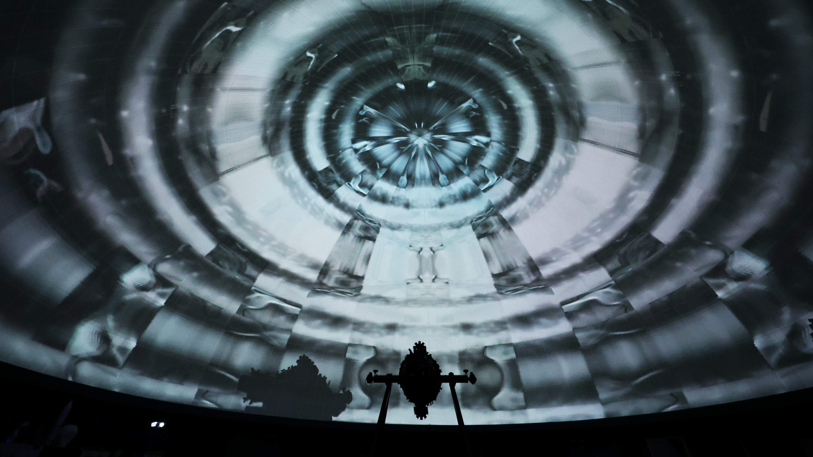
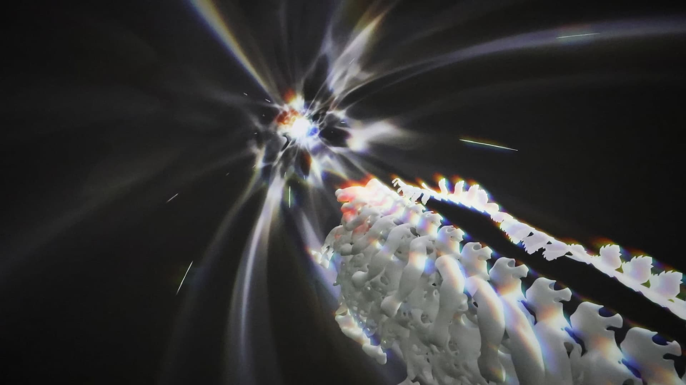

cool grey + red stab
monochrome fulldome
near-black render
Desaturated, cinematic, low-key. Projection blue-grey is home base; warmth (red / orange) enters only as a rare accent. Frames round at 6px; text over media gets a bottom-up black scrim.